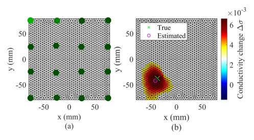
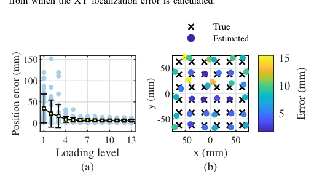
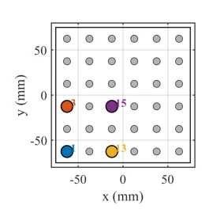
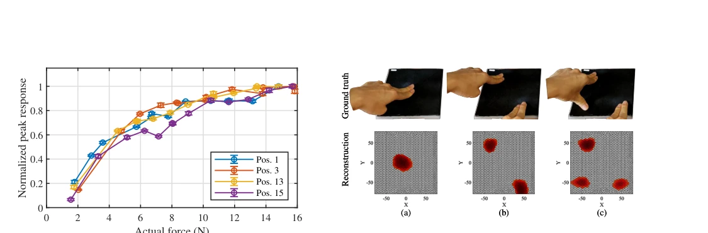
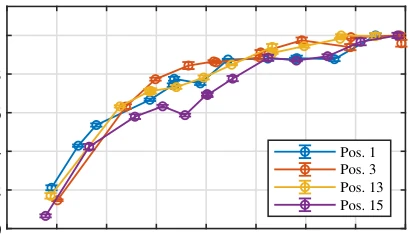
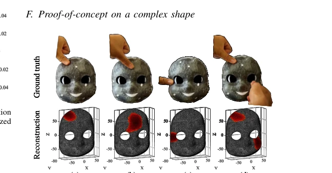
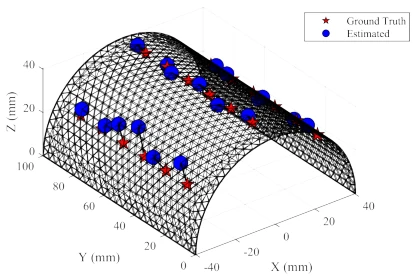

Fig. 1. Schematic of the proposed conformal EIT tactile skin. (a) Layered sensor structure. (b) Touch increases local coupling between the low- resistance contact-enhancement patches (r) and the higher-resistance flexible conductive TPU sensing layer (R, with R ≫r).
Fig. 3. Experimental setup and samples for electromechanical characteriza- tion. (a) Normal-loading setup and resistance measurement path. (b) Sample groups used to compare contact-enhancement patch material, conductive TPU sensing layer thickness, and conductive TPU sensing layer porosity.

Fig. 7. Illustration of the reconstruction and localization process. (a) FEM model and electrode configuration of the EIT tactile sensor. (b) Representative reconstructed conductivity-change image for a single contact. The true contact location and the extracted estimated position are marked, from which the XY localization error is calculated.
Fig. 5. Experimental setup for planar single-contact localization.

Fig. 8. Localization performance of the 3D-printed EIT tactile sensor.(a) Position error under different loading levels. Markers and error bars indicate the mean and standard deviation. The loading level denotes the predefined indentation setting, not closed-loop force control; the corresponding load- cell measurements increased monotonically from approximately 1.5 ˜N to 16 ˜N across levels 1–13. (b) Representative localization map at loading level 6. Black crosses, colored circles, and gray lines denote true positions, estimated positions, and localization error vectors, respectively.

Fig. 6. Schematic diagram of single the touch test with predefined contact positions 1, 3, 13, and 15 highlighted.

Fig. 10. Multi-contact reconstruction on the planar sensor. The top row shows the applied contact conditions, and the bottom row shows the corresponding EIT reconstruction. The reconstructed hotspots are consistent with the applied contact regions for one-, two-, and three-contact cases.

Fig. 9. Reconstructed normalized peak response versus measured contact force at four representative positions. For each frame, the peak value was defined as the maximum positive value of the reconstructed conductivity change. At each position, the peak responses were normalized by the mean peak response measured at the highest force level, yielding a dimensionless normalized peak response. Error bars indicate the standard deviation across valid frames within the selected pressing window. The normalized peak response increases with applied force and gradually approaches saturation at high force levels.

Fig. 13. Example interactions with the iCub face sensor prototype. In each column, the ground truth (photography) is presented above the resulting EIT reconstruction. See the supplementary video for more information.

Fig. 12. Spatial distribution of ground truth and estimated contact positions on the sensor surface.